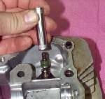

A valve guide is a short metal tube pressed into the cylinder head. The valve stem slides up and down inside it. It keeps the valve centred so the valve face lands squarely on its seat.
What it does
The guide holds the valve in line, carries heat from the stem into the head and, with the valve seal, limits how much oil reaches the stem. If the guide wears, the valve rocks and no longer seats evenly.
Signs it is worn or failing
- A valve that wobbles when pulled out a little and moved side to side with the head off. A very small amount of play is normal.
- Blue smoke, most noticeable after idling or on first start, when oil runs down a worn guide.
- A tappet tick or uneven valve clearance that keeps changing after adjustment.
- Low compression from a valve that no longer seals, even after the seat is cut.
When to replace it
Replace the guide when stem play is over the limit in your bike's manual. Many guides are fine and are left alone. On an old, low-value bike the cost may not be worth it. A guide is also replaced when a valve has stuck in it and scored it.
What to match when buying
- Match the engine code and say whether it is for the intake or exhaust valve, as they can differ.
- Check the outside diameter and length against the old guide, and the bore against the valve stem.
- Bronze and cast iron guides are common. Buy the material the manual lists.
Fitting notes
- Workshop job. An aluminium head is heated and the new guide is cooled so it drops in with a light press. The guide must then be reamed to size. Doing this wrongly can crack the head.
- Measure play with a dial gauge on the valve tip with the stem pulled slightly out of the seat. See Assess the top end and Remove and refit valves.
- Cut or lap the valve seat after a guide change, never before.